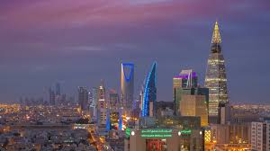
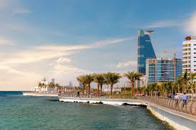
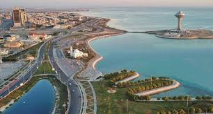
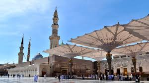

Riad
Riad es la capital y la ciudad más grande de Arabia Saudí. Con su mezcla de modernidad y tradición, Riad ofrece una experiencia única a sus visitantes. Entre sus atracciones más destacadas se encuentra el Palacio de Murabba, que ofrece una visión de la rica historia del país, y el Museo Nacional de Arabia Saudí, que alberga una amplia colección de artefactos históricos. Además, los visitantes pueden explorar los zocos tradicionales de la ciudad, disfrutar de la cocina local en los numerosos restaurantes y experimentar la hospitalidad saudí en los majlis (salas de estar tradicionales).
Jeddah
Jeddah es la segunda ciudad más grande de Arabia Saudí y un importante centro económico y cultural. Conocida por su hermoso paseo marítimo y su impresionante arquitectura, Jeddah ofrece una experiencia única a sus visitantes. Entre sus principales atracciones se encuentra la Fuente del Rey Fahd, una de las fuentes más altas del mundo, y el Barrio Histórico de Al-Balad, declarado Patrimonio de la Humanidad por la UNESCO. Los visitantes también pueden disfrutar de las playas de la ciudad, explorar sus zocos y mercados, y degustar la deliciosa comida saudí en los restaurantes locales.
Dammam
Dammam es una ciudad portuaria ubicada en la costa este de Arabia Saudí. Es conocida por ser un importante centro industrial y comercial, así como por sus hermosas playas y paisajes desérticos. Los visitantes pueden explorar el Parque Corniche, que ofrece vistas panorámicas del Golfo Pérsico, y el Museo de Dammam, que exhibe artefactos históricos y culturales de la región. Además, Dammam es un punto de partida conveniente para explorar otras atracciones cercanas, como el Oasis de Al-Ahsa y el Parque Nacional de Thumama.
Medina
Medina es una de las ciudades más sagradas del Islam y un importante destino religioso para millones de musulmanes de todo el mundo. Es conocida por albergar la Mezquita del Profeta, donde está enterrado el profeta Mahoma, así como por su hermosa arquitectura islámica y su rica historia. Los visitantes pueden explorar el centro histórico de la ciudad, que está lleno de bazares, mezquitas y sitios religiosos, y experimentar la espiritualidad de Medina participando en las oraciones en grupo y en los rituales religiosos.